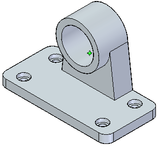
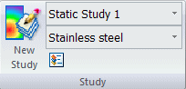
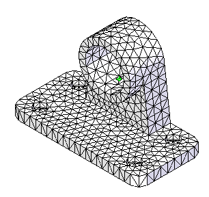
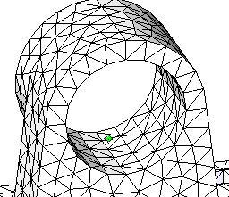
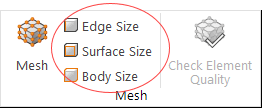
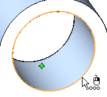
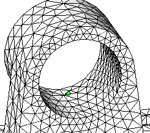
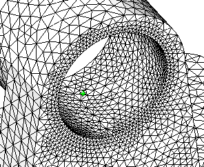

Activity: Size the mesh on an edge
For information about meshes, mesh quality, and how you can refine the mesh to improve results, see the following help topics:
-
Open the file FE_bearing_edge_size.par.
Simulation models are delivered in the \Program Files\Siemens\Solid Edge 2023\Training\Simulation folder.

-
Notice that Static Study 1 was created and is the active study.

-
Mesh the bearing.
-
Choose Simulation tab→Mesh group→Mesh.

-
In the Tetrahedral Mesh dialog box, click the Mesh button.
The NX Nastran mesh processing starts and displays a progress meter.
Note:In the absence of loads and constraints, you cannot solve the study, but you can mesh the model.
After a short period of time, the bearing displays with a tetrahedral mesh.

-
-
Rotate the part so you can view the rear, and zoom in on the main bore.

-
Change (refine) edge sizing.
-
Choose Simulation tab→Mesh group→Edge Size.

-
Select the circular edge of the bore.

-
In the Edge Size dialog box, type 50 in the Number of elements box, and then click Accept

-
Mesh the part again.
Note the increased number of elements in the region around the selected edge.

Observe that the edge sizing you applied is shown in the Simulation pane as Edge Size 1.
-
-
Change the number of edge sizing elements.
-
Double-click the Edge Size 1 entry.
The Edge Size dialog box appears, showing the current sizing value for the number of elements applied to the edge.
-
Change the Number of elements to 75 and click Accept.
-
Mesh the part again. In the Simulation pane, right-click the Mesh node and choose the Mesh command from the shortcut menu.
Now, you see a significant change around that edge.

Note:Increasing the number of elements in a single, highly-stressed region of a part can improve the accuracy of the analysis without greatly impacting the processing time within NX Nastran.
-
-
Close this file.
How do I
Mesh the modelActivity: Use subjective mesh sizing
Activity: Apply a surface mesh to a sheet metal part
Activity: Size the mesh on a surface
Learn more
MeshesMesh sizing
Examining the mesh
Identifying areas of poor mesh quality
Look up more details
Mesh dialog boxMesh Options dialog box
Body Size dialog box
Edge Size dialog box
Surface Size dialog box
Check Element Quality